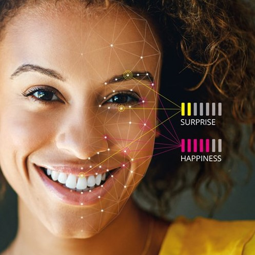
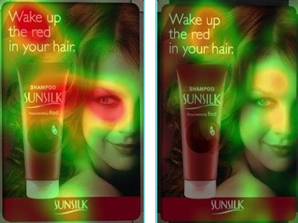

ПОВЕДЕНЧЕСКАЯ ЭКОНОМИКА И НЕЙРОМАРКЕТИНГ
технология исследования успешности Вашего продукта
"Очень часто люди не знают, чего хотят, пока ты не покажешь им..." Стив Джобс.
Представьте,
в руках информация об успешности Вашей рекламы.
Представили?
Это и есть то, что мы делаем.
Нейромаркетинг - инструмент, который работает.
Эмоции человека

Изучение эмоций волновало человечество начиная с 3 века до н.э. Издревле люди замечали, что от настроения
зависит поведение человека.
Исследования поведения, в последние 100 лет, претерпело значимые изменения от наблюдения и классические опросники до сложных анкет и фокус групп,
но сегодня все больше маркетологов и дизайнеров
предпочитают использовать новые и совершенные методы нейромаркетинга, которые имеют ряд преимуществ:
1. Скорость анализа результатов исследования исчисляется не неделями и днями, а минутами и часами.
2. Проведенное исследование показывает не только существование потребности и желания, но и множество других показателей, таких как интерес,
вовлеченность при просмотре и т.д.
3. Полученные результаты это психофизиологическая реакция человека, которую нельзя подделать, в отличие от ответов на вопросы в анкетах и интервью.
Внимание

В современном обществе одно из ведущих направлений, приносящее шокирующие суммы является реклама.
Для того, что бы Ваш продукт узнавали необходимо, всего лишь, внимание людей. Однако даже если поставить продукт на самое видное место,
не всегда, потребитель будет смотреть
куда следует.
На изображении слева Вы видите два, казалось бы, одинаковых постера. В левом постере девушка смотрит на продукт, а в правом - вперед. Согласитесь,
что более естественно выглядит картинка справа, но, благодаря методам нейромаркетинга, было
выявлено, что постер слева заставляет человека обращать внимание на продукт, что обязательно увеличит его узнаваемость.
Память

Китайская мудрость гласит: "Тот кто найдет ключ к памяти человека, тот завладеет миром!" Современные маркетологи - это исследователи-практики,
старающиеся создать такие условия, при которых
человек мог бы запомнить информацию с первого раза. К сожалению память не безгранична, а информации слишком много для того, что бы запомнить все.
Методы нейромаркетинга являются тем инструментом, который показывает потенциал запоминаемости Вашей рекламы. Благодаря современным методам исследования мозга
и открытиям в области исследования проблем памяти, были созданы такие алгоритмы, которые могут помочь определить возможности Вашего рекламного продукта.
Примеры исследования
Видео
Как смотреть:
1. Точки на видео это то куда устремлён взгляд человека.
2. Красный гарфик указывает на моменты, в который активизируется память т.е. эти моменты будут сохранены в памяти.
3. График если идёт вверх то эмоции положительная, если вниз то отрицательная, если посередине, то эмоций нет.
Результаты исследования показали, что реакция на видео рекламу положительная. Основная положиотельная реакция происходит в момент, когда появляется заставка с логотипом
Последние 2 секунды ролика отличаются сильной отрицательной эмоции.
Вывод.
Данные показывают , что в целом видео больше положительное чем отрицательное. Видеоролик можно охарактеризовать
как веселый, но пики эмоций показывают, что отрицательные эмоции сильнее. Для уменьшения отрицательного
эффекта необходимо убрать последние 2-е секунды видео ролика.
Как смотреть:
1. Точки на видео это то куда устремлён взгляд человека.
2. Красный грфик указывает на моменты, в который активизируется память т.е. эти моменты будут сохранены в памяти.
3. График если идёт вверх то эмоции положительная, если вниз то отрицательная, если по середине, то эмоций нет.
Результаты исследования показали, что видеореклама имеет как положительные, так и отрицательные эмоции. Необходимо отметить активизацию
памяти испытуемых во время просмотра видеоролика.
Вывод.
Данные показывают, что видео не имеет явной эмоциональной направленности. Согласно исследованиям, отрицательные эмоции проявляются при появлении в кадре
химика, физрука, танцев. Системность положительных эмоций не выявлена.
Музыка
Как смотреть:
График если идёт вверх то эмоции положительная, если вниз то отрицательная, если по середине, то эмоций нет.
Результаты исследования показали, что музыка имеет сильное эмоциональное влияние на слушателей
вероятность, что музыка будет известная и поддержана слушателями высока.
Вывод.
В результате исследования можно сделать вывод, что музыкальная композиция производить сильное эмоциональное впечатление, особенно во время припева.
Вероятно, что при популяризации музыки слушатели поддержат исполнительно из-за высокой положительной эмоциональной оценки.
Как смотреть:
График если идёт вверх то эмоции положительная, если вниз то отрицательная, если по середине, то эмоций нет.
Результаты исследования показали, что музыка имеет слабое эмоциональное влияние на слушателей. При условиях потребности в музыке во время прослушивая исследуемой песни, вероятно,
слушатели будут искать более сильные эмоциональные переживания в других музыкальных композициях.
Вывод.
В результате исследования можно сделать вывод, что музыкальная композиция не воздействует на эмоции слушателей, что вероятно не приведет к формированию устойчивого желания
прослушивать эту мелодию часто.